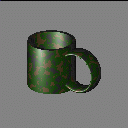

mged> l mug.r
mug.r: REGION id=1000 (air=0, los=100, GIFTmater=1) --
Shader 'plastic'
Color 32 128 32
u cup.c
handle.c
This tells us that mug.r is a region
and that it uses the plastic shader.
The color of the object is "32 128 32", and it is made up of the union of two
objects: cup.c and handle.c
If we look at cup.c we get:
mged> l cup.c
cup.c: --
u - outside.s
inside.s
rim.s
Note that this is not a region
so there are no material properties. The boolean tree indicates that the
object consists of: (outside.s - inside.s) u rim.s which in graph form looks
like:
outside.s / (-) / \ / inside.s cup.c -- (u) \ rim.sThe text output of the boolean tree lines up the indentation of the operands with the operator. So here, becaus outside.s and inside.s are indented together, they are the operands to the subtraction operator. The subtraction operator and rim.s are indented the same amount, so the result of the subtraction, and rim.s are the operands of the union operator.
In the example above, we specified that the mug should be rendered with the ``plastic'' shader. This implements a simple ``phong'' lighting model. The result can be altered by adjusting parameters that define how the shader operates. These parameters are:
| Parameter | Abbrev | Type | Range | default |
|---|---|---|---|---|
| Shine | sh | int | 4 .. 20 | 10 |
| diffuse | di | float | 0 .. 1 | 0.3 |
| specular | sp | float | 0 .. 1 | 0.7 |
| transmission | tr | float | 0 .. 1 | 0.0 |
| reflection | re | float | 0 .. 1 | 0.0 |
mged> mater mug.r
Shader =
Shader? ('del' to delete, CR to skip) plastic di=.9 sh=4
Color = (No color specified)
Color R G B (0..255)? ('del' to delete, CR to skip) 32 128 32
Inherit = 0: lower nodes (towards leaves) override
Inheritance (0|1)? (CR to skip)
mged>
If we raytrace the mug now, it has a different appearance.
Sometimes it is useful to combine the effects of two shaders. The ``stack'' shader was created for this situation. For example, we might want to apply a blotchy camoflage-like color pattern to the mug. The ``camo'' shader provides the color pattern, while the ``plastic'' shader provides the lighting model.
mged> mater mug.r
Shader = plastic
Shader? ('del' to delete, CR to skip) stack camo s=10;plastic
Color = 32 128 32
Color R G B (0..255)? ('del' to delete, CR to skip)
Inherit = 0: lower nodes (towards leaves) override
Inheritance (0|1)? (CR to skip)
mged>
The ``camo'' shader creates a color pattern using a procedural noise
technique. It computes a fBm value based upon the point being shaded. To
compute this value it needs to be able to map coordinates in model space
into a noise space. The most important parameter to specify is ``size''.
This tells the shader what the spacing is (in millimeters) of grid points
from the noise space. It also gives us a rough bound on the size of the blobs
of color it creates.
| Parameter | abbrev | type | default |
|---|---|---|---|
| Lacunarity | l | float | 2.1753974 |
| H_value | H | float | 1.0 |
| octaves | o | int | 4 |
| delta | d | float vector | 1000.0, 1000.0, 1000.0 |
| Threshold 1 | t1 | float | -0.25 |
| Threshold 2 | t2 | float | 0.25 |
| size | s | float | 1.0 |
| color 1 | c1 | int vector | 97, 74, 41 |
| color 2 | c2 | int vector | 26, 77, 10 |
| color 3 | c3 | int vector | 38, 38, 38 |
This time we will raytrace the image with a grey background instead of black. We specify this with the -C option:
mged> rt -F:1 -s 128 -C100/100/100
Mged can save a shell script to raytrace the current view. This is done with the ``saveview'' command.
mged> saveview mug_camoIf we exit mged we will find a file called ``mug_camo'' in the current directory. Running this script will start the ``rt'' program to create a file called mug_camo.pix. If you do not specify the size of the image on the command line, it will default to a 512x512 image. This file can be displayed in your framebuffer server window using the ``pix-fb'' command.
% ./mug_camo % pix-fb mug_camo.pix
When you are done with the framebuffer, you can dismiss the window with the ``fbfree'' command.